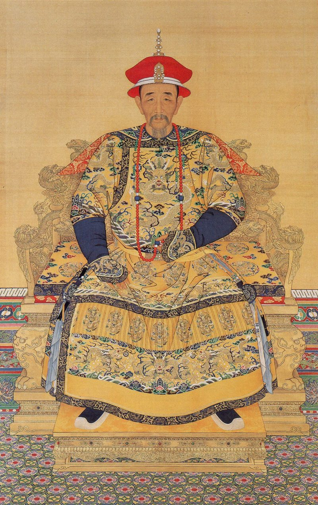
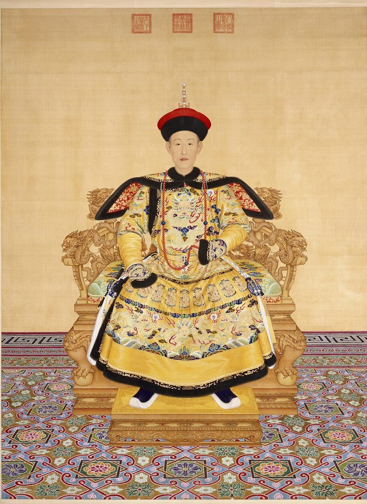
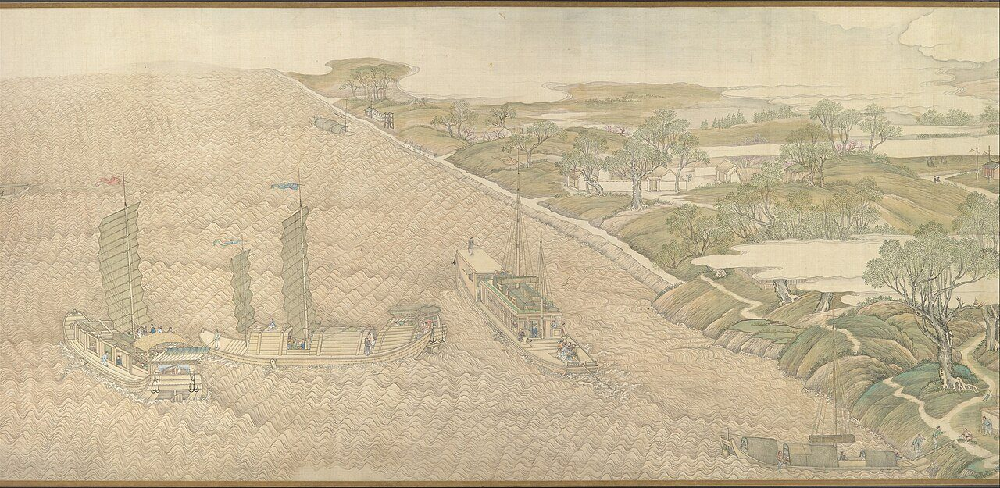
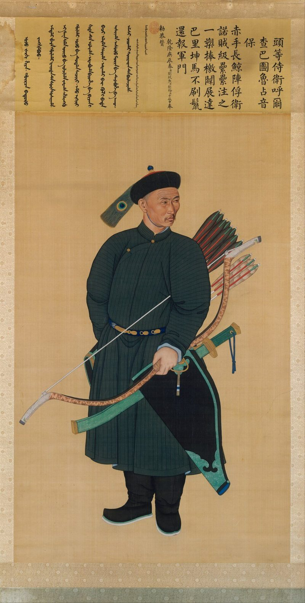
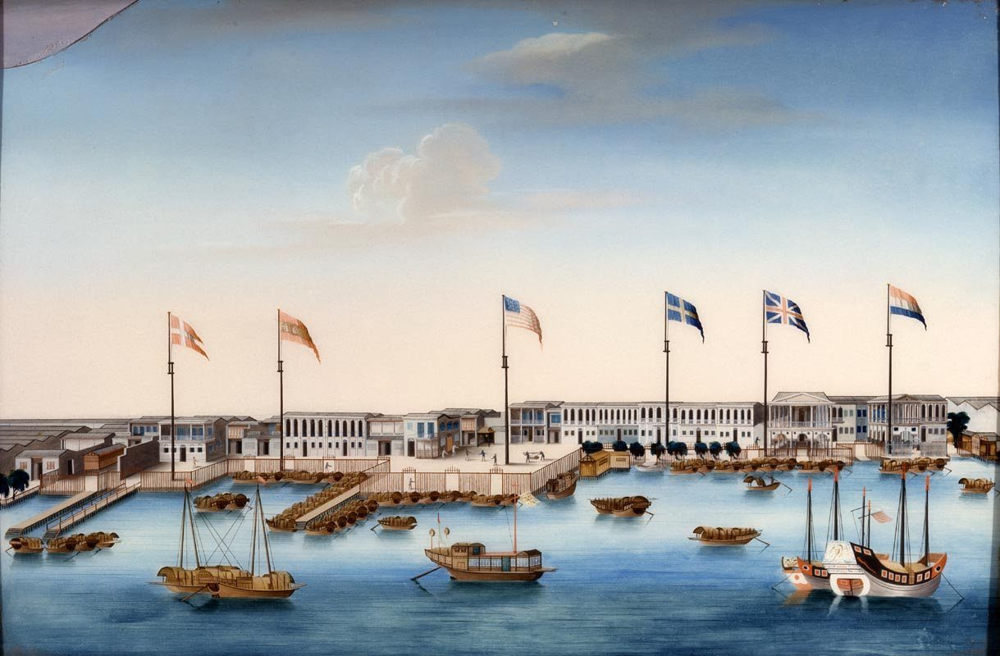
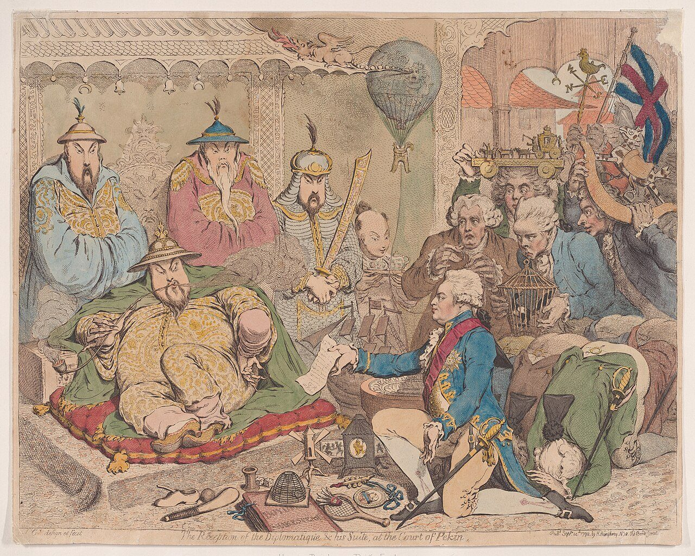
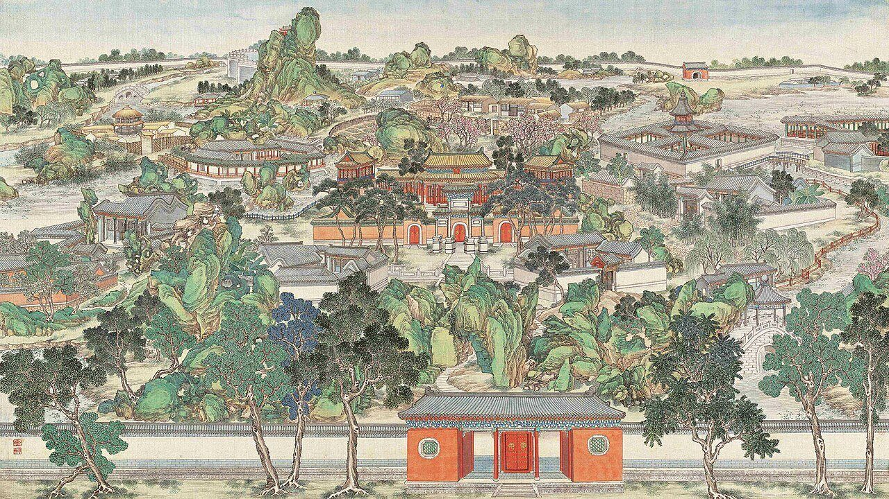

Unit 2 · Study guide
The Qing 大清
The creation of the Manchu empire, 1600–1800
ContentsOverview
The chapter in one paragraph
As the Ming dynasty fell into disorder, the Jurchens beyond its northeastern border built an efficient state and renamed themselves Manchus (man-choo). Called in to help crush rebels who had taken Beijing, they took the throne themselves and founded the Qing dynasty (1644–1911). Many Chinese resisted out of loyalty to the Ming, but by the 1700s Chinese and Manchus had learned to accommodate each other. The textbook calls the eighteenth century in many ways the high point of traditional Chinese civilization. The Manchus also built a multiethnic empire, adding Taiwan, Mongolia, Tibet, and Xinjiang, comparable to the Ottoman, Russian, and Habsburg empires. p. 270
How did a small conquest people hold a huge, diverse empire together, and give old Chinese political forms a new lease on life?
Questions historians ask p. 270
The Manchus
- Who were they, and how did their history shape how they ruled?
- How did they win the allegiance of peoples of different backgrounds?
The state
- Why did the Ming fall and the Qing succeed?
- How did the Qing revive traditional Chinese political forms?
The Chinese
- Was population growth a sign of prosperity, or a growing problem?
- How did scholars respond to Manchu rule?
Dotted-underlined words are defined in Key terms: hover or tap to see the definition, or open the ✎ button at any time. Page numbers refer to the textbook. Pronunciations follow the textbook: Kangxi (kahng-shyee), Qianlong (chyen-lung), Jiangnan (jyahng-nahn), Xinjiang (shin-jyahng).
Who were the Manchus?
p. 271
The Manchus descended from the Jurchens of the Jin dynasty. They lived in scattered communities in Manchuria, in close contact with Mongols, Koreans, and Chinese.
Way of life
Hunters, fishers, and farmers, not nomads. Superb horsemen and archers. Slaves, often captured Koreans or Chinese.
Religion
Native shamanism, alongside Lamaist Buddhism learned from the Mongols.
Trade
At five monthly border markets (by the 1580s) they traded horses, furs, honey, and ginseng for Chinese tea, cotton, silk, rice, salt, and tools.
Diplomacy
Ming and Joseon welcomed Manchu missions as a counterweight to the Mongols. Letters were often written in Mongolian, the region's common language.
Nurhaci builds a state
The Manchus credited their rise to Nurhaci, who became leader of one Manchu group in 1583 at age 24. A Korean visitor in 1595–96 saw small, armed villages of under twenty households, nomadic Mongols in yurts nearby, and Chinese-literate staff from Liaodong in Nurhaci's service. Nurhaci knew China firsthand: he led an embassy to Beijing in 1590 and offered to help the Ming fight Japan in Korea in 1591. Marriages to Mongols cemented alliances. p. 271
Like Chinggis Khan, he reorganized his armies to weaken tribal loyalties, creating the banners (see Part 7).
Conquest and Ming loyalism
pp. 272–273
How the Manchus got in
Details: Li Zicheng (lee dzih-chuhng) was eliminated in 1645 and fellow rebel Zhang Xianzhong in 1647. Wu Sangui (woo sahn-gway) and many other Chinese generals joined the Manchus once they claimed the throne. The Nanjing court hoped to survive in the south, as the Song had after losing the north in 1126. Shi Kefa (shih kuh-fah) was minister of war at Nanjing; Yangzhou fell after a five-day battle. The hair order began with Chinese soldiers in Qing armies and spread to all men, deepening resentment; Jiading, Changshu, and Jiangyin were among the cities slaughtered. pp. 272–273
Able officials joined the Ming cause, but leadership was poorly coordinated. Many generals defected, and their soldiers were folded into Qing armies; many local officials simply opened their city gates. As cities fell, large numbers of loyalists killed themselves, often joined by wives, mothers, and daughters. pp. 272–273
Loyalist thinkers: rethinking China after the fall
Some scholars who refused to serve the Qing used their time to ask what had gone wrong. p. 273
Huang Zongxi
Served the Ming resistance court, retired after 1649. Concluded the Ming's problems were not small ones like eunuchs but the imperial institution itself.
Gu Yanwu
His mother starved herself rather than live under the Manchus. He studied practical topics (banking, mining, farming), scorned empty speculation, and blamed overcentralization; urged local autonomy.
Wang Fuzhi
Raised troops, then withdrew in 1650. Insisted on separating Chinese from "barbarians": even ants, he argued, defend their nest from intruders, and the Ming had failed this basic duty.
Building the empire, step by step
pp. 271–276 · compare the textbook's Map 16.1, p. 272
Press a date (or ▶ Play) to watch the Qing grow. Each step summarizes what the chapter says happened then.
Regions use modern provincial and national borders as a stand-in and are approximate. Inner Mongolia and Qinghai (gray) were Qing lands, but the chapter does not say when they were added. Base map: Natural Earth (public domain).
For the first time, China was governed in the same state as Tibet and Xinjiang. Taking Mongolia ended, the textbook says, two thousand years of northern border problems: Qing cannons and muskets let it dominate the steppe cheaply. pp. 274, 287
The Qing at its height
pp. 273–274
For more than a century China was ruled by just three emperors, each hard-working, talented, and committed to the dynasty's success. Their policies brought a respite from war, and the population nearly doubled. p. 273
| Emperor | Reign | Remembered for |
|---|---|---|
| Kangxi kahng-shyee | 1661–1722 | Winning over Chinese elites; crushing the Three Feudatories; Taiwan, Mongolia, Tibet |
| Yongzheng yung-juhng | 1723–1735 | Tighter central control; rationalized taxes |
| Qianlong chyen-lung | 1736–1795 | Xinjiang; magnificence; literary inquisition; Heshen's corruption |
Population nearly doubles over the 1700s
Figures from p. 273. The chapter summary (p. 287) prints "300,000," an evident misprint for 300 million.
Why did it grow? p. 273
Climate
Global warming lengthened the growing season.
Crops
Wider use of New World crops.
Disease
New diseases that spread with 1500s global traffic slowed.
Government
Efficient famine relief.
Some scholars argue China's standard of living in the mid-1700s matched Europe's, and that its richest region, Jiangnan, compared well with England and the Netherlands in life expectancy, food consumption, and transport. pp. 273–274
Kangxi and Yongzheng
pp. 274–276
When the Shunzhi emperor died of smallpox (which struck many Manchus after they moved to Beijing), a son who had already survived it was chosen. At 14, the Kangxi emperor announced he would rule himself and had his regent imprisoned. p. 274
Winning over the Chinese
- Spoke, read, and wrote Chinese; worked to persuade the educated that the Manchus held the Mandate of Heaven.
- Kept Ming institutions largely unchanged, including the examinations.
- Toured the south, where resistance had been strongest.
- Held a special exam to pick men to write the official history of the Ming, to draw in loyalists.

Securing the empire
| When | What |
|---|---|
| 1673–81 | Revolt of the Three Feudatories. Wu Sangui, as a turncoat himself, drew few followers; the Qing military won in eight years. Taiwan then became part of Fujian province (1683). |
| 1689 | Treaty with Russia, in Russian, Manchu, Chinese, and Latin, defines the Manchurian border and regulates trade. (Signed at Nerchinsk; it pushed Russia out of the Amur basin, per Britannica.) |
| 1696 | Kangxi leads 80,000 men into Mongolia; within a few years Manchu supremacy is accepted. |
| 1718 | Chasing Western Mongols into Tibet, a Qing army occupies Lhasa; a permanent banner garrison follows in the 1720s. |
| 1727 | Second Russian treaty: a Russian church mission may live in Beijing; a caravan may come every three years. Russia wanted tea. |
Kangxi and the Jesuits
Kangxi took a personal interest in the Jesuits at court, who worked as astronomers and cartographers and translated European works. But in the rites controversy he objected to the pope telling Chinese how to behave and outlawed missionaries, while letting Jesuit scientists and painters stay in Beijing. p. 276
Took the throne at 45. A hard worker who tightened central control and replaced a patchwork of taxes and fees with new levies. Thanks to his reforms, his son's government regularly ran surpluses. p. 276
Qianlong: magnificence and suspicion
pp. 276–277

Qianlong expanded the empire to its maximum, adding Xinjiang in the 1750s. He believed the Qing could hold the empire together only by speaking the political and religious languages of each people it ruled. p. 276
To Inner Asians
- Conversed in Manchu, Chinese, Mongolian, Uighur, Tibetan, and Tangut
- Patron of Lamaist Buddhism; had the Tibetan canon translated into Mongolian and Manchu
- Played the Buddhist cakravartin
To the Chinese
- A sage emperor: state work at dawn, then painting and calligraphy
- Credited with 42,000+ poems; inscribed hundreds of masterpieces
- Ostentatiously filial to his mother

Not fully confident of Chinese support
The queue-clipping scare
After 30+ years on the throne, rumors that sorcerers were "stealing souls" by clipping queues made him suspect sedition. Torture produced evidence of a plot that did not exist.
The literary inquisition
Suspecting governors of hiding seditious books during the Four Treasuries project, he had them hunted down. No copies survive of 2,000+ titles. More
Heshen
In his sixties he favored a young bodyguard, Heshen (huh shuhn), who rose to control revenue and appointments, sent rosy reports on rebellions, and pocketed military funds.
The end: Qianlong abdicated in 1795 so as not to outreign his grandfather Kangxi, but dominated the court until his death in 1799, aged 89. p. 277
In 1711 Fang Bao (fahng bow) and his family were arrested because he had written a preface for a friend's book later condemned as pro-Ming. In two years in prison he saw:
- 200+ prisoners in windowless cells; the living and the dead slept side by side, so disease spread.
- Hardened criminals usually survived; light offenders and mere witnesses died.
- Officials, clerks, and guards profited from more prisoners, extracting cash for bail or loosened shackles; the poorest stayed chained as warnings.
Pardoned, he went on to hold literary posts, and still wrote about the abuses. His suggestion: keep minor offenders and unconvicted people apart, unchained.
A head merchant in Yangzhou's salt monopoly, where 20–30 head merchants could each pocket 50,000–100,000 ounces of silver a year. His biographers dwell on how he spent: gardens, 39 talented men in his entourage, two opera troupes. He hosted Qianlong on four of six southern tours; the emperor named his "Garden of Pure Fragrance," cleared him in a 1768 embezzlement scandal, and lent him 500,000 ounces in 1771 when he ran out of money. The textbook's question: why did biographers focus on spending rather than earning?
The banner system
pp. 271, 277–279
Life as a bannerman p. 277
- Garrisons: 90+ across China, usually inside city walls. Chinese living in northern Beijing were forced out; Beijing became a Manchu city.
- Separate: bannermen were a hereditary caste ranked above others, expected to live apart from Chinese and forbidden to intermarry.
- Supported: about 2 million acres were taken to fund garrisons. Bannermen lived on stipends from rents, with allowances for travel, weddings, and funerals.
- Trapped: they could only be soldiers or officials. The banner population outgrew the posts, leaving many idle. Qianlong moved most Chinese bannermen out, making the banners more Manchu.

Privileges, by the numbers pp. 277–278
Half of all top posts were reserved for bannermen, and Manchus held about half the provincial governorships. In court, a Chinese knelt before the magistrate while a Manchu could stand; for the same crime a Manchu might wear the cangue for 60 days instead of being exiled for life.
The problem of staying Manchu pp. 278–279
- Within a generation, the Beijing dialect of Chinese became their common language; Manchu became a school subject.
- Martial skills faded with city life and peace.
- Many went bankrupt despite debt forgiveness; land was sold off.
- Resettlement in Manchuria failed: most sneaked back.
- Using personal names alone, not family names.
- Loyalty: unlike service elites in other empires, the banners never turned on the ruling house.
Qianlong, knowing how the Jin Jurchens had lost their ways in China, discouraged bannermen's interest in Chinese culture and preached frugality as a Manchu trait, despite his own opulent court. p. 279
Contacts with Europe
pp. 280–281 · also Connections, p. 268
The Qing ran foreign relations through a tributary system modeled on the Ming's. Europeans were marginal to it. The Dutch East India Company displaced Spain and Portugal soon after 1600; the British East India Company then competed with the Dutch. p. 280
Europeans had to pay cash for goods (p. 280); trade was "in exchange for silver" (Connections, p. 268).
Life under the Canton system p. 280
- Europeans traded only at Guangzhou, far south, though tea grew mostly in the Yangzi valley; shipping it south raised prices.
- A guild of Guangzhou merchants dealt with them and guaranteed they obeyed Qing rules.
- Europeans had to pay cash and could not enter the walled city, ride in sedan chairs, bring women or weapons to their quarters, or learn Chinese.

Early 1700s: admired. China was the source of tea, silk, porcelain, cloisonné, wallpaper, and fans; Voltaire praised Confucian rationalism and a government free of parasitic aristocrats and hypocritical priests. After 1793: books by Macartney's party were less rosy than earlier Jesuit reports. China, by contrast, learned little about Britain. pp. 280–281
The Macartney mission, 1793 p. 280

Why Britain sent him: merchants resented Qing trade limits; the trade balance was lopsided; the government wanted direct relations, partly to curb the East India Company.
Lord George Macartney's goals: a trading base near the tea districts, a commercial treaty, demand for British goods, an envoy in Beijing, and access to Japan and Southeast Asia.
What happened: 84 people and 600 cases of gifts (clocks, telescopes, globes, Wedgwood pottery…). The only Chinese speaker was a 12-year-old boy who learned on the voyage. George III's letter used language unfit for an emperor. Macartney refused the kowtow, met Qianlong informally at his summer retreat, and no negotiations followed: the court saw no merit in his requests.
Women, especially in the lower walks of life, are bred with little other principle than that of implicit obedience to their fathers or their husbands.
The conservative turn, and its eccentrics
pp. 281–282
New books of every sort, flourishing theater, interest in Buddhist, Daoist, even European ideas; truth sought individually, following Wang Yangming.
The Ming fell from moral laxity, many concluded; the fix was a return to Zhu Xi's objective standards.
Signs of the conservative turn p. 281
- Harsher laws against homosexuality.
- Theaters closed and novels banned as socially subversive; the scholar Qian Daxian called the vernacular novel the main threat to Confucian orthodoxy.
- The cult of widow chastity peaked.
- Textual research: Yan Ruoju (yen rwaw-jyu) mapped place names in the Four Books and proved the "old text" Book of Documents could not be genuine.
Room for the unconventional pp. 281–282
Eight Eccentrics of Yangzhou
Individualistic ink painters who pushed painting toward self-expression, sometimes covering a painting with their writing. They easily found patrons, even among conservatives. One, Jin Nong (1687–1764), filled the space around a 1760 Buddha portrait with a history of Buddha images and remarks about himself, laughing at a friend's claim that he had founded a new school.
Yuan Mei and his women students
Yuan Mei (ywan may) risked censure by teaching women poetry. In 1797 his student Luo Qilan defended him: if Confucius had thought women's words must stay indoors, he would have cut women's poems from the Book of Poetry.
The Dream of Red Mansions
pp. 281–283 · also called Story of the Stone
Considered by many the most successful work of Chinese fiction: a novel of love and desire, money and power, life and death, truth and illusion, and a psychologically sensitive novel of manners. Cao Xueqin (tsow shwe-chin, 1715–1764) wrote the first 80 chapters; another writer added 40 before publication in 1791. Cao's family had risen as bondservants of the Manchu house, then lost favor and went bankrupt. pp. 281–282
The plot in brief p. 283
The wealthy Jia family builds a magnificent garden to receive Baoyu's sister, now an imperial consort. Afterward Baoyu, his cousins, and their maids move in: an idyllic world of youth and beauty. It ends when Baoyu is tricked into marrying Baochai, thinking he is marrying Daiyu.
Why it is powerful
Countless subplots and minor characters from every walk of life; abuse of political power; family members competing for advantage. A concubine plots demon possession against Baoyu; a maid kills herself after he flirts with her; his father beats him. At one point Baochai admits that she and her cousins secretly read plays as children, until the adults found out and burned the books, a glimpse of the conservative turn from inside the family.

Village life and hard times
pp. 283–284
The 1700s were among China's most prosperous times, but benefits were uneven. p. 283
| Jiangnan ("the south") | Most of north China | |
|---|---|---|
| Farming | Intensive; much sold on the market | Tiny family-owned farms |
| Land | Often rented from absentee landlords for fixed cash, by written contract | Most farmers owned land, yet were often no richer than southern tenants |
| Main hazard | Floods (Yangzi basin) | Drought; occasional Yellow River floods |
How villages worked pp. 283–284
Open villages
No common land; families bought, sold, or mortgaged freely, so wealth varied. Poorer families did side work (weaving mats and baskets); men sought winter jobs in towns.
Ties beyond the village
Marriages were to other villages; men walked to market towns; villages cooperated on dikes and irrigation by written agreement, taking disputes to the county magistrate.
Few legal status divisions
Slavery was insignificant (unlike Korea) and there were no nationwide outcasts (unlike Japan), but locally the Boat People of Guangdong and the Duomin of Zhejiang were treated as lower than commoners.
Moving to the margins
As population grew, settlers cleared uplands and frontiers with New World crops, often pushing out peoples like the Miao and Yao.
When the harvest failed: a family's last resorts p. 284
- Better-off farmers wait for the next harvest on their reserves.
- Pawn clothes, tools, then land.
- Forage for edible plants in the forests.
- Send able-bodied men to look for work in towns.
- The whole family takes to the road. Hungry bands seize grain; refugees crowd cities expecting soup kitchens, and epidemics spread in the camps.
Townspeople suffered too as food prices rose. Knowing supply and demand, crowds blocked merchants from shipping grain away and protested officials who closed granaries; sometimes troops quelled these food riots. p. 284
Good famine relief raised population. With partible inheritance, farms shrank. Women were scarce, since the rich took concubines and poor families killed unwanted daughters, so many poor men could not marry. They left home to pull Grand Canal grain boats, work docks, carry sedan chairs, collect night soil, or mine copper in the southwest, and both officials and villagers distrusted them. p. 284
Sects, secret societies, and revolts
pp. 285–286
| Heaven and Earth Society | White Lotus Society | |
|---|---|---|
| What | Brotherhood of lodges (the Triads) | Folk Buddhist sect of local congregations |
| Roots | Daoism, popular religion; first appears 1760s | Song-era folk Buddhism; key in the end-of-Yuan rebellions |
| Appeal | Security, mutual aid (loans, funerals, lawsuits), empowerment for single men | Salvation, martial arts, herbal healing; women joined on equal terms and often led |
| Politics | "Overthrow the Qing, restore the Ming" | Millenarian: the Eternal Mother's faithless children will be destroyed |
| Where | Taiwan, Fujian, Jiangxi, Guangdong, Guangxi | Central provinces, Sichuan and Shaanxi to Shandong |
| Revolts | Taiwan, 1780s | Shandong 1774; Hubei, Sichuan, Shaanxi 1796 (8+ years to crush) |
Many White Lotus followers were pious vegetarians. The Luo sect ran free hostels in Suzhou and Hangzhou for canal boatmen idle in winter, with meals on credit, and retirement homes for the old and unmarried. The suspicious Qing destroyed them all. p. 285
China in 1600 vs. 1800
pp. 286–287
| c. 1600 (late Ming) | 1800 (Qing) | |
|---|---|---|
| Rulers | Chinese Ming dynasty | Manchus, a century and a half of alien rule, now widely accepted, using Chinese-style institutions |
| Territory | China proper | Plus Manchuria, Taiwan, Mongolia, Tibet, Xinjiang |
| Population | 150–175 million as the three great reigns began | 300–325 million |
| Culture | Open, experimental | More conservative; stricter standards of behavior |
| Europe | Marginal contact | Growing trade in tea, silk, porcelain; few Chinese aware of it |
Unlike the Mongols, the Manchus proved very different rulers: they patronized Chinese culture and relied on Chinese officials, while special quotas, legal privileges, and separate living kept Manchus dominant. Their sensitivity to ethnic slights may have made Chinese officials cautious. p. 286
The same Manchu state that founded the Qing invaded Joseon in 1627 and 1636. Most yangban despised the Manchus; only later did Korea's Northern Learning scholars urge learning from Qing China. See Unit 1, Part 7 and Part 11.
Test yourself
Flashcards
Who's who
| Person | Why they matter |
|---|---|
| Nurhaci | United the Manchus; created the banners; khan of revived Jin (1616) |
| Hong Taiji | Nurhaci's son; renamed the state Qing (1636) |
| Dorgon | Regent for Shunzhi; led the conquest of China |
| Li Zicheng | Rebel who took Beijing in 1644 |
| Wu Sangui | Ming general who let the Manchus in; led the Three Feudatories revolt |
| Shi Kefa | Ming loyalist who defended Yangzhou (1645) |
| Zheng Chenggong (Koxinga) | Loyalist holdout on Taiwan, to 1683 |
| Huang Zongxi · Gu Yanwu · Wang Fuzhi | Loyalist thinkers: imperial institution, overcentralization, Chinese vs. "barbarians" |
| Kangxi | Consolidated the Qing; Mongolia, Tibet, Russia treaty; banned missionaries |
| Yongzheng | Central control and tax reform |
| Qianlong | Xinjiang; multilingual patron; literary inquisition; Macartney |
| Heshen | Qianlong's corrupt favorite |
| Jiang Chun | Yangzhou salt merchant who hosted Qianlong |
| Fang Bao | Imprisoned 1711; described prison abuses |
| Lord Macartney | British envoy, 1793; refused to kowtow |
| Cao Xueqin | Author of Dream of Red Mansions |
| Jin Nong · Yuan Mei | Eccentric painter; poet who taught women |
Key dates
| 1616 | Nurhaci declares war on the Ming |
| 1636 | State renamed Qing |
| 1644 | Manchus take Beijing; Qing dynasty in China |
| 1645 | Yangzhou massacre; queue order |
| 1661–62 | Main loyalist camps defeated |
| 1673–81 | Revolt of the Three Feudatories |
| 1683 | Taiwan taken, made part of Fujian |
| 1689 | Treaty with Russia |
| 1696 | Kangxi's Mongolian campaign |
| 1718 | Qing army in Lhasa |
| 1750s | Xinjiang conquered |
| 1759 | All maritime trade confined to Guangzhou |
| 1791 | Dream of Red Mansions published |
| 1793 | Macartney mission |
| 1795–96 | Qianlong abdicates; Miao and White Lotus revolts |
Discussion questions
Open each for points the chapter gives you to work with.
How did the Manchus hold a multiethnic empire together?
- Spoke each people's idiom: Confucian sage to Chinese, cakravartin and Lamaist patron to Tibetans and Mongols, documents in four languages.
- Light rule in Tibet and Xinjiang (no queue, own religious leaders).
- A loyal, privileged banner elite garrisoned across China.
- Military edge: guns against bows on the steppe.
Why did the Ming fall and the Qing succeed?
- Rebels took Beijing; Wu Sangui opened the Great Wall.
- Ming loyalist leadership was poorly coordinated; generals and officials defected.
- Banners had already built a multiethnic military-political order; the Qing kept Ming institutions and won over elites.
Was population growth a sign of prosperity or a problem?
- Prosperity: surpluses, famine relief, living standards possibly equal to Europe's.
- Problem: partible inheritance shrank farms; unmarriageable rootless men; settlers displaced the Miao; sects and revolts by the 1790s.
Were the bannermen a success or a failure for the Qing?
- Success: never turned on the dynasty; secured Manchu dominance.
- Failure: idle, impoverished, losing language and martial skill despite privileges.
Why did the Macartney mission fail?
- The Qing wanted to keep regulated trade; Britain wanted to end it.
- Protocol clashes: the improper letter, the kowtow refusal.
- No real interpreter; the court saw no merit in the requests.
What does the conservative turn tell us about how the Ming's fall was understood?
Scholars blamed moral laxity and Wang Yangming's stress on emotion; the response was Zhu Xi, textual rigor, bans on fiction and theater, and widow chastity. Yet eccentric painters, Yuan Mei, and Dream show the limits of that turn.
Textbook questions: Jiang Chun and Fang Bao
From the Biography and Document boxes (pp. 275, 279): Why did biographers dwell on how a merchant spent money? Why was meeting the emperor such an honor? What gave Fang Bao the courage to report on prisons, and what made reform hard?
Key terms
Click to expand
Ordered so each term only relies on terms above it. "Builds on" shows what to know first. Terms marked † are defined from an outside source, listed under Sources.
- Jurchens
- A people of Manchuria who ruled north China as the Jin dynasty (1127–1234). Their descendants lost the Jin written language but kept the Jurchen hairstyle. p. 271
- Manchuria · Liaodong
- Manchuria: roughly the modern provinces of Liaoning, Jilin, and Heilongjiang. Liaodong: a Ming prefecture in its more crowded south, where Manchus lived alongside Mongols, Koreans, and Chinese. p. 271
- Manchus
- The name Nurhaci gave the Jurchens he united. Not nomads but hunters, fishers, and farmers; excellent horsemen and archers, with a tribal, strongly hierarchical society that included slaves. Their language belongs to the Tungus family. p. 271Builds on: Jurchens, Manchuria
- Han Chinese · non-Han
- The Chinese majority, as distinct from the empire's other peoples (Manchus, Mongols, Tibetans, Uighurs, and southern groups such as the Miao). p. 286
- China proper
- The core provinces the Ming had ruled, as opposed to the outer lands the Qing added: Manchuria, Mongolia, Tibet, and Xinjiang. pp. 274, 277
- Xinjiang shin-jyahng · Chinese Turkestan
- The far northwest, won in the 1750s from Uighur and Dzungar Mongol forces. Han and Tang had loosely controlled it; Song and Ming had not tried. Ruled lightly: locals kept their religious leaders and did not wear the queue. p. 276Builds on: China proper
- Jiangnan jyahng-nahn
- "South of the Yangzi River": the most advanced region, with the highest wealth and commerce and dense concentrations of books and scholars. pp. 281, 283
- Miao · Yao · Zhuang · Hakka
- Miao (myow), Yao, Zhuang: indigenous peoples of the south, often exploited and pushed out as Han settlers moved in. Hakka: a Han ethnic group of recent settlers on the Hunan–Guizhou border. pp. 284, 286Builds on: Han Chinese
- Mandate of Heaven †
- The Confucian belief that Heaven granted the emperor, the "Son of Heaven," direct authority to govern. Kangxi worked to persuade educated Chinese that the Manchus held it legitimately. p. 274; Britannica
- Khan
- Title of a ruler on the steppe, as Chinggis (Genghis) had been. Nurhaci declared war on the Ming in 1616 as khan of a revived Jin dynasty. p. 271
- Regent
- Someone who rules on behalf of a child monarch. Dorgon was regent for the five-year-old Shunzhi emperor; Kangxi jailed his own regent at fourteen. pp. 271, 274
- Banners
- Units Nurhaci created to replace tribal ties. Each was a set of military companies under hereditary captains, and included the soldiers' families and slaves. By 1644: 24 banners (8 Manchu, 8 Mongol, 8 Chinese). p. 271Builds on: Manchus
- Bannermen · garrisons
- Members of the banners. After the conquest they lived in 90+ walled garrisons, apart from Chinese, on state stipends. A hereditary, privileged caste, allowed to work only as soldiers or officials. p. 277Builds on: banners
- Queue
- The Manchu male hairstyle: front of the head shaved, the rest in a long braid. Ordered for all Chinese men from 1645, which fed resistance. pp. 271, 273
- Ming loyalism
- Resistance to the Qing out of loyalty to the fallen Ming: armed resistance (to 1661–62, and on Taiwan to 1683) and, more quietly, scholars refusing to serve. pp. 272–273
- Ming pretender
- A Ming prince claiming the throne after Beijing fell. The last was chased into Burma by Wu Sangui's armies. p. 274Builds on: Ming loyalism
- Three Feudatories
- Huge southern territories given to Wu Sangui and two other Chinese generals as rewards; each was in effect a satrap (a governor ruling almost independently). When the Qing curbed them in 1673 they revolted; it took eight years to defeat them. p. 274
- Civil service examinations
- Exams on the Confucian classics used to pick officials, held at prefectural, provincial, and national levels. The Qing kept the Ming system largely unchanged. p. 274; Britannica
- Jinshi
- The highest examination degree, taken in Beijing after passing the provincial exams. Manchu quotas won them more than 5% of jinshi degrees. pp. 273, 277Builds on: civil service examinations
- Tributary system
- The diplomatic system, modeled on the Ming's, in which countries such as Korea, Ryukyu, Vietnam, and many Southeast Asian states sent envoys to the court in Beijing. Europeans were only marginal players. p. 280
- Kowtow
- Kneeling on both knees and bowing the head to the ground before the emperor. Macartney objected to performing it. p. 280Builds on: tributary system
- Complete Books of the Four Treasuries
- Qianlong's project to catalogue nearly all books in China. p. 276
- Literary inquisition
- During the Four Treasuries project, Qianlong ordered searches for books disparaging the Manchus or earlier alien conquerors. Passages were cut or rewritten, whole books destroyed: no copies survive of over 2,000 titles. p. 276Builds on: Four Treasuries
- Cangue
- A large wooden collar worn as a punishment. A Manchu might wear it for 60 days where a Chinese got life exile for the same crime. p. 278
- Salt monopoly
- The government claimed sole right to salt and licensed merchants to move and sell it. Head salt merchants, centered in Yangzhou, could grow exceptionally rich. p. 275
- Bondservants
- Hereditary servants of the ruling house, who could win wealth and power managing enterprises for it. Cao Xueqin's family were bondservants. p. 282
- Shamans
- In the Manchus' native religion, men or women who had experienced a spiritual death and rebirth and so could travel to and influence the spirit world. p. 271
- Lamaist (Tibetan) Buddhism
- Buddhism originally from Tibet. The Manchus adopted it from the Mongols, alongside their shamanism; Qianlong was a major patron. pp. 271, 276
- Dalai Lama †
- Leader of the dominant (Gelug) order of Tibetan Buddhism. The textbook says Qianlong had child Dalai Lamas raised and educated in Beijing. p. 276; BritannicaBuilds on: Lamaist Buddhism
- Cakravartin
- "Wheel-turning king": the Buddhist ideal of a ruler whose conquests move the world toward its next stage of universal salvation. Qianlong made much of it. p. 276Builds on: Lamaist Buddhism
- Jesuits
- Catholic religious order (founded 1534). Jesuits served the Qing court as astronomers, cartographers, translators, and painters, and tried to fit Christianity to Chinese ways. pp. 267–268, 276
- Rites controversy
- The dispute over whether Chinese converts could keep ancestral altars. When the pope sided with the Dominicans and Franciscans against it (1715), Kangxi objected to the pope directing Chinese behavior and outlawed missionaries, keeping Jesuit scientists and painters in Beijing. pp. 268, 276Builds on: Jesuits
- Zhu Xi vs. Wang Yangming
- Two schools of Neo-Confucianism (see Unit 1). Zhu Xi stressed textual study and objective standards outside the individual; Wang Yangming taught that anyone could find what is right by looking within, validating emotion and spontaneity. p. 281; Unit 1, p. 251
- Conservative turn
- Many scholars blamed the Ming's fall on moral laxity encouraged by Wang Yangming's followers and returned to Zhu Xi. Results: harsher laws against homosexuality, theaters closed, novels banned, and the cult of widow chastity. p. 281Builds on: Zhu Xi vs. Wang Yangming
- Widow chastity
- The ideal that a widow should never remarry. It reached new heights: some women lived as celibate "widows" of fiancés who died before they had even met. pp. 281, 286Builds on: conservative turn
- Textual research
- Rigorous textual analysis of the classics: going back to Han-dynasty commentaries or the classics alone and sticking to verifiable facts, to strip out Buddhist and Daoist ideas. It needed big libraries, so it thrived in Jiangnan. p. 281Builds on: conservative turn, Jiangnan
- Syncretic
- Blending teachings from different religions; one reason regular Buddhist clergy rejected the White Lotus. p. 285
- Millenarian · Maitreya
- Millenarian: expecting the present age to end soon in catastrophe, followed by a new era. Maitreya: the Future Buddha who will usher in an era of peace. p. 285
- White Lotus Society
- A folk Buddhist sect dating to the Song, syncretic and millenarian (drawing also on Manichaeism, a dualistic religion from Persia†). Its central deity, the Eternal Mother, sends Buddhas to bring her lost children home; the faithless will be destroyed. It welcomed women equally and rose in revolt in 1774 and 1796. pp. 285–286Builds on: syncretic, millenarian
- Heaven and Earth Society (Triads)
- The best-known brotherhood or secret society, appearing in the 1760s. It gave marginal men mutual aid, used secret signals, and preached overthrowing the Qing and restoring the Ming; many lodges ran gambling, narcotics, prostitution, and smuggling. p. 285
- New World crops
- Crops from the Americas (sweet potatoes, white potatoes, peanuts, tobacco) that let farmers use land once too hilly or infertile; one reason for population growth. pp. 273, 283
- Partible inheritance
- Dividing family property among all sons. With a growing population, it multiplied farms too small to support a family. p. 284; Unit 1, p. 262
- Open villages
- Chinese villages held no land in common and had little say over who bought or sold land, so family fortunes varied widely. Contrast Japan's closed corporate villages. p. 283
- Lineage · single-surname village
- A lineage is a group of males descended from one ancestor. Where all villagers shared his surname, the lineage ancestral hall was the center of village life; elsewhere, a local god's temple was. p. 284
- Granaries & famine relief
- Government grain stores and direct relief. Careful Qing management curbed famine deaths, which helped the population rise. p. 284
- British East India Company
- British trading company founded in 1600. It made great fortunes trading with China; by the 1790s the British government grew suspicious of it. pp. 268, 280
- Canton (Guangzhou) system †
- From 1759, all maritime trade was confined to Guangzhou (Canton). A guild of Chinese merchants guaranteed that Europeans obeyed Qing rules; Europeans paid cash, stayed outside the walled city, and could not learn Chinese. Britannica dates the system 1759–1842. pp. 268, 280; BritannicaBuilds on: British East India Company
- Balance of trade
- The difference in value between what a country imports and exports. As British tea purchases rose, it grew "more lopsided": Chinese merchants wanted few British goods. p. 280Builds on: Canton system
Sources and further reading
- Main text: Patricia Buckley Ebrey & Anne Walthall, Modern East Asia from 1600: A Cultural, Social, and Political History, 3rd ed. (Cengage, 2013), Ch. 16, pp. 270–287; Connections: "Europe Enters the Scene," pp. 265–269.
- Primary sources the chapter excerpts: Cao Xueqin, The Story of the Stone, trans. David Hawkes (Penguin, 1973–80); Pei-kai Cheng, Michael Lestz & Jonathan Spence, The Search for Modern China: A Documentary Collection (Norton, 1999), for Fang Bao; W. T. de Bary & R. Lufrano, Sources of Chinese Tradition, vol. 2 (Columbia, 2000), for Wang Fuzhi.
- Outside definitions (marked †): Encyclopaedia Britannica, "Tianming (Mandate of Heaven)"; "Dalai Lama"; "Manichaeism"; "Canton system"; "Chinese examination system"; "Treaty of Nerchinsk".
Image credits
- Expansion map: drawn for this course on Natural Earth 1:50m data (public domain). Modern borders; approximate.
- Nurhaci, anonymous court portrait, 17th c., Palace Museum, Beijing: public domain, Wikimedia Commons.
- Kangxi Emperor in court dress, anonymous court painter: public domain, Wikimedia Commons.
- Giuseppe Castiglione, Qianlong Emperor in court dress (1736), Palace Museum: public domain, Wikimedia Commons.
- Xu Yang et al., The Qianlong Emperor's Southern Inspection Tour, Scroll Four (1770), Metropolitan Museum of Art: CC0, Wikimedia Commons.
- Portrait of the Imperial Bodyguard Zhanyinbao (1760), Metropolitan Museum of Art: CC0, Wikimedia Commons.
- The European factories at Guangzhou, reverse-glass painting, c. 1805: public domain, Wikimedia Commons (via MIT Visualizing Cultures).
- James Gillray, The Reception of the Diplomatique and his Suite at the Court of Pekin (1792), Metropolitan Museum of Art: CC0, Wikimedia Commons.
- Sun Wen, the garden from his illustrated Dream of the Red Chamber, 19th c.: public domain, Wikimedia Commons.


_MET_DP105279.jpg){kind=link}


Image titles and dates come from each image's catalog record, not from the textbook.